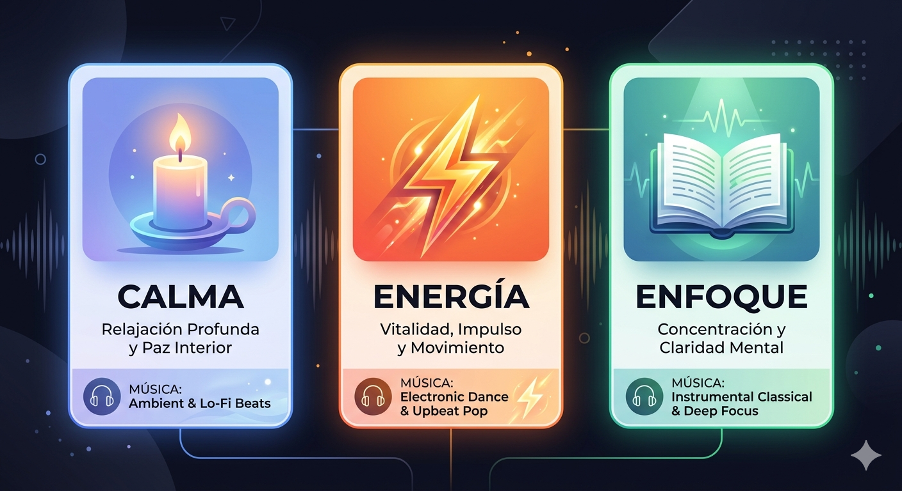

El Efecto Melodía alcanza su máximo potencial cuando se aplica con intención. No toda la música sirve para todo: mientras que las frecuencias Lo-fi o la música barroca optimizan la concentración y el enfoque, los sonidos de la naturaleza son ideales para combatir el insomnio. Crear uno propio "botiquín sonoro" significa saber qué género elegir para cada necesidad: desde sanar la ansiedad hasta encontrar la chispa de creatividad que se necesita para trabajar.